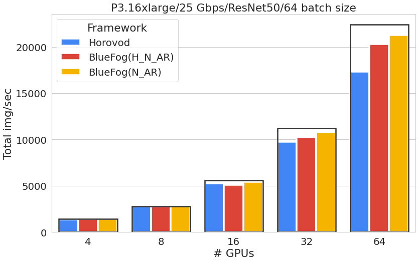
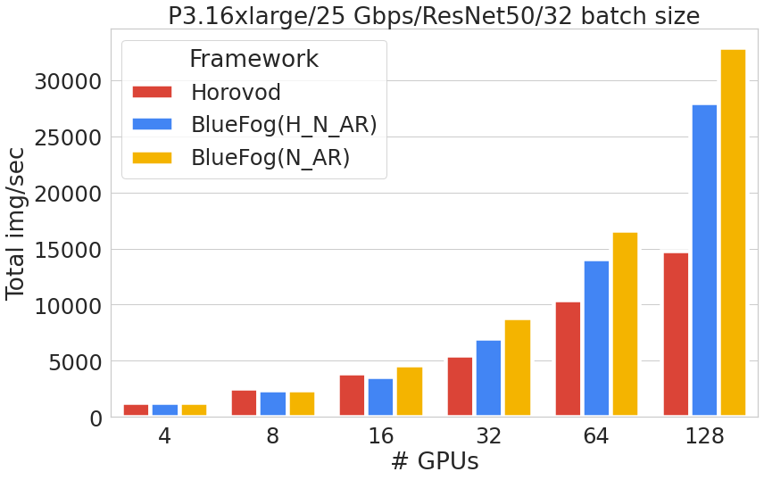

Performance¶
ThroughPut Benchmark¶
All of our benchmarks were run on the AWS. We use p3.16xlarge as basic machine. Each machine has 8 V100 GPUs (64GB memory) with NVLink-enabled and inter-connected communication speed is 25Gbps. For more details of machine instance, you can find it here.
To reproduce the benchmarks, run following command 1:
$ bfrun -np 16 -H server1:4,server2:4,server3:4,server4:4 \
python examples/pytorch_benchmark.py --batch-size 64 \
--dist-optimizer=neighbor_allreduce
At the end of run, you will see the total number of images processed per second like:
Total img/sec on 16 GPU(s): 4310.6 +- 146.9
We also provide another distributed optimizer DistributedHierarchicalNeighborAllreduce, which is similar as neighbor_allreduce one but within each machine execute local allreduce first to form a super node. This optimizer may produce better scaling in terms of loss and accuracy. Read Bluefog Operations Explanation page to checkout the details of the underlying communication operation.
$ bfrun -np 16 -H server1:4,server2:4,server3:4,server4:4 \
python examples/pytorch_benchmark.py --batch-size 64 \
--dist-optimizer=hierarchical_neighbor_allreduce
We also provided the option of set dist-optimizer as horovod for easy comparison. Above three dist-optimizers produce following benchmarks:
{kind=link}
where N_AR represents the neighbor allreduce optimizer and H_N_AR represents the hierarchical_neighbor_allreduce and the black box represents the idea of linear scaling. We can see Bluefog can achieve over 95% scaling efficiency while Horovod is around 66% sacling efficiency under a batch size of 64 on 128 GPUs.
For more communication intensive case with a batch size of 32, the scaling efficiency between Bluefog and Horovod becomes even larger.
{kind=link}
Accuracy and Loss¶
TO BE ADDED
Tricks of Boosting Accuracy¶
Just like the tricks decaying of lr over time used in the large batch size training for ImageNet, there are several small tricks of using Bluefog as well, including
Smaller Warmup LR
Periodical Global Average
ATC (adapt-then-combine) VS DGD(distributed-gradient-descent) style (Do the neighbor allreduce after VS in parallel with gradient computation)
Faster learning rate decaying like decaying every 25 epoches instead of 30 epoches for ImageNet + ResNet Training
TO BE ADDED
- 1
We recommended using aws-ParallelCluster as cluster manager combined with our docker images to run BlueFog on AWS.